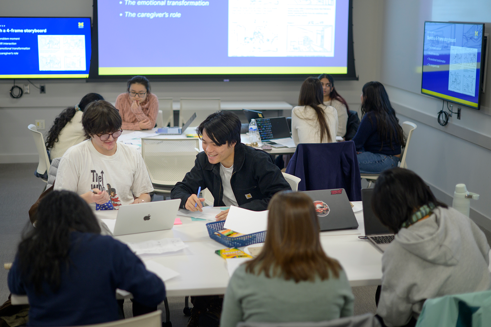

Navigating Your Active Project
As your project moves forward, use this guide to conduct research, track progress, and respond to feedback from your team and partner.
Learning Through Project Challenges
As you work on your project, you may find that requirements change, team responsibilities shift, or your partner faces unexpected constraints. Your research may also reveal needs you had not considered. Take time to understand these changes and discuss what they mean for your work.
Work with your team and partner to review feedback, revisit the project's scope, and decide what needs to change. Pay attention to how your decisions affect the people involved. These conversations help you practice problem-solving, adapt your approach, and keep the project focused on shared goals.
Phase 3: Managing and Carrying Out Your Project
As you carry out the work, gather insights from your research, keep track of tasks, and communicate regularly with your partner.
Project Goals

- Learn through fieldwork: Use human-centered research methods to understand people and their context. Review what you observe and consider how it can guide your project.
- Keep your partner informed: Share regular updates on your progress, challenges, and next steps so your partner understands how the work is developing.
- Use feedback to guide your work: Ask your team and partner for feedback, review it together, and decide how to apply it as the project continues.
Featured Resources & Handouts
| Category |
Resource Name |
Purpose |
| Observation & Needfinding |
HFLI - AEIOU Worksheet for Observations |
Framework for organizing field observations into Activities, Environments, Interactions, Objects, and Users. |
| User Research |
HFLI User-Needs-Insights Worksheet |
Guidance on using interviews and observations to identify user needs and inform design decisions. |
| Feedback Management |
HFLI Feedback Worksheet |
Structure for gathering and discussing feedback with your team, instructors, and partners during the project. |
| Case Analysis |
Ginsberg Center - Community Engagement Cases Handout |
Practice scenarios for considering ethical challenges and possible responses in community engagement. |
| Sponsor Tracking |
Sponsor Dashboard Template - Organizational Excellence |
Overview of project progress to keep your clients and sponsors informed. |
| Communications Plan |
Student Project Communications Plan Example & Template |
Guidance on setting meeting schedules, communication channels, and expected response times. |
| Workflow Tracking |
Project Management Worksheet |
Guidance on breaking project goals into milestones and assigning tasks to team members. |